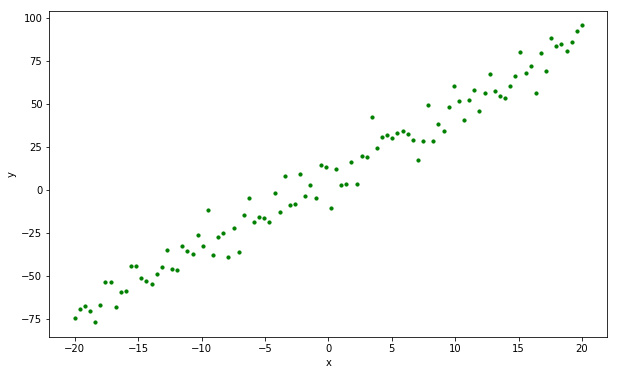

在统计学中，线性回归（Linear regression）是利用称为线性回归方程的最小二乘函数对一个或多个自变量和因变量之间关系进行建模的一种回归分析。这种函数是一个或多个称为回归系数的模型参数的线性组合。只有一个自变量的情况称为简单回归，大于一个自变量情况的叫做多元回归。下面以简单线性回归为例，以机器学习的方法求解此问题。
问题设定
已知有 $N$ 个 $x, y$ 对构成数据集 $X, Y$ ，他们在坐标轴上的分布如下图：

现在希望找到一个函数：
$$h(x) = wx+b$$
这个函数会尽可能的拟合数据集 $X, Y$ ，为了做到这点，我们希望这个函数 $h(x)$ 在 $X$ 上每一个取值 $x_i$ 的函数值 $h(x_i)$ 与 $Y$ 上每一个对应的 $y_i$ 的平方差尽可能小。即找到一组 $w, b$ ，能使得 $loss(w, b)$ 最小。
$$loss(w, b) = \frac{1}{N}\sum^{N}_{i=0}(wx_i+b-y_i)^2$$
问题求解
采用梯度下降法找到目标 $w, b$，先随机初始化一对 $w_0, b_0$。由于函数的负梯度方向是函数值下降最快的方向，因此对 $w, b$ 求其偏微分:
$$\begin{aligned} \frac{\partial loss(w, b)}{\partial w} &= \frac{2}{N}\sum^{N}{i=0}(wx_i+b-y_i)\cdot x_i, \ \frac{\partial loss(w, b)}{\partial b} &= \frac{2}{N}\sum^{N}{i=0}(wx_i+b-y_i) \end{aligned}$$
再通过下式在每次迭代中更新 $w, b$ ：
$$\begin{aligned} w_{t+1} &= w_t - \eta \frac{\partial l(w_t, b_t)}{\partial w_t} \ b_{t+1} &= b_t - \eta \frac{\partial l(w_t, b_t)}{\partial b_t} \end{aligned}$$
其中， $\eta$ 是学习率。
python实现
1
2
3
4
5
6
7
8
9
10
11
12
13
14
15
16
17
18
19
20
21
22
23
24
25
26
27
28
29
30
31
32
33
34
35
36
37
38
39
40
41
42
43
44
45
46
| # -*- coding: utf-8 -*-
# %matplotlib inline
import matplotlib.pyplot as plt
import numpy as np
# 生成100对x, y
data_count = 100
w_cache, b_cache, l_cache, = [], [], []
# 学习速度
learning_rate = 0.003
# 迭代次数
training_steps = 3000
x_data = np.linspace(-20, 20, data_count)
y_data = np.multiply(4, x_data) + 7 + np.random.normal(loc=0, scale=8.0, size=(data_count,))
# 初始化w和b
w = np.random.rand()
b = np.random.rand()
y_predict = w * x_data + b
# 梯度下降迭代3000次
for iteration in range(training_steps):
y_predict = w * x_data + b
diff = y_predict - y_data
error = np.sum(np.square(diff)) / data_count
grad_w = np.mean(diff * x_data)
grad_b = np.mean(diff)
w -= learning_rate * grad_w
b -= learning_rate * grad_b
w_cache.append(w)
b_cache.append(b)
l_cache.append(error)
y_predict = w * x_data + b
# 绘制结果
plt.figure(figsize=(10, 6))
plt.scatter(x_data, y_data, s=10, color='g')
plt.plot(x_data, y_predict)
plt.title('y=4x+7')
plt.xlabel('x')
plt.ylabel('y')
plt.show()
|
tensorflow实现
1
2
3
4
5
6
7
8
9
10
11
12
13
14
15
16
17
18
19
20
21
22
23
24
25
26
27
28
29
30
31
32
33
34
35
36
37
38
39
40
41
42
43
44
45
46
47
48
49
50
51
52
53
54
55
56
57
58
59
60
61
62
63
64
65
66
67
68
69
70
71
72
73
74
75
76
77
78
79
80
81
| # -*- coding: utf-8 -*-
import tensorflow as tf
import matplotlib.pyplot as plt
import numpy as np
# 初始化变量和模型参数，定义训练闭环中的运算
# 生成100对x, y
data_count = 100
# 超参数，实际的训练迭代次数
training_steps=1000
# 超参数，学习速率
learning_rate=0.003
# 定义tf graph输入
X = tf.placeholder(tf.float32)
Y = tf.placeholder(tf.float32)
# 定义模型参数
W = tf.Variable(np.random.randn(), name="weight", dtype=tf.float32)
b = tf.Variable(np.random.randn(), name="bias", dtype=tf.float32)
def inference(X):
# 计算推断模型在数据X上的输出，并将结果返回
pred = tf.add(tf.multiply(W, X), b)
return pred
def loss(X,Y):
# 依据训练数据X及其期望输出Y计算损失
pred = tf.add(tf.multiply(W, X), b)
cost = tf.reduce_sum(tf.pow(pred-Y, 2)) / data_count
return cost
def inputs():
# 读取或生成训练数据X及其期望输出Y
x_data = np.linspace(-20, 20, data_count)
y_data = np.multiply(4, x_data) + 7 + np.random.normal(loc=0, scale=8.0, size=(data_count,))
return (x_data,y_data)
def train(total_loss):
# 依据计算的总损失训练或调整模型参数
optimizer = tf.train.GradientDescentOptimizer(learning_rate).minimize(total_loss)
return optimizer
def evaluate(sess,X,Y):
# 对训练得到的模型进行评估
# 因为是线性回归，这里只图示
plt.figure(figsize=(10, 6))
plt.scatter(X, Y, s=10, color='g')
pred=inference(X)
plt.plot(X, sess.run(pred))
plt.title('y=4x+7')
plt.xlabel('x')
plt.ylabel('y')
plt.show()
# 在一个会话对象中启动数据流图，搭建流程
with tf.Session() as sess:
tf.initialize_all_variables().run()
X,Y=inputs()
total_loss=loss(X,Y)
train_op=train(total_loss)
coord=tf.train.Coordinator()
threads=tf.train.start_queue_runners(sess=sess,coord=coord)
for step in range(training_steps):
sess.run([train_op])
# 出于调试和学习的目的，查看损失在训练过程中递减的情况
if step % 10 ==0:
print("loss: ",sess.run([total_loss]))
evaluate(sess,X,Y)
coord.request_stop()
coord.join(threads)
sess.close()
|
参考文献
- 线性回归, by wikipedia.
- 重拾基础 - 线性回归（一）, by Cerulean.